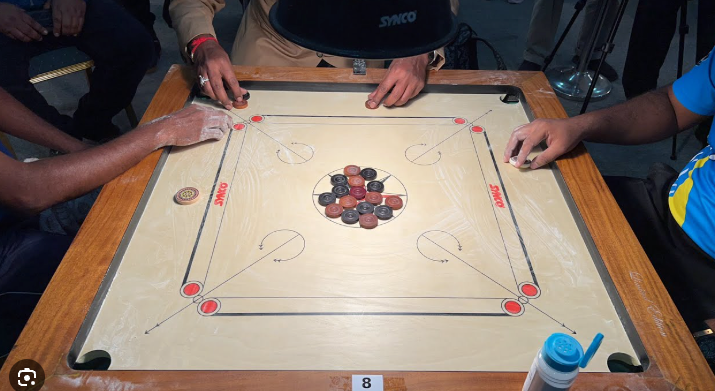
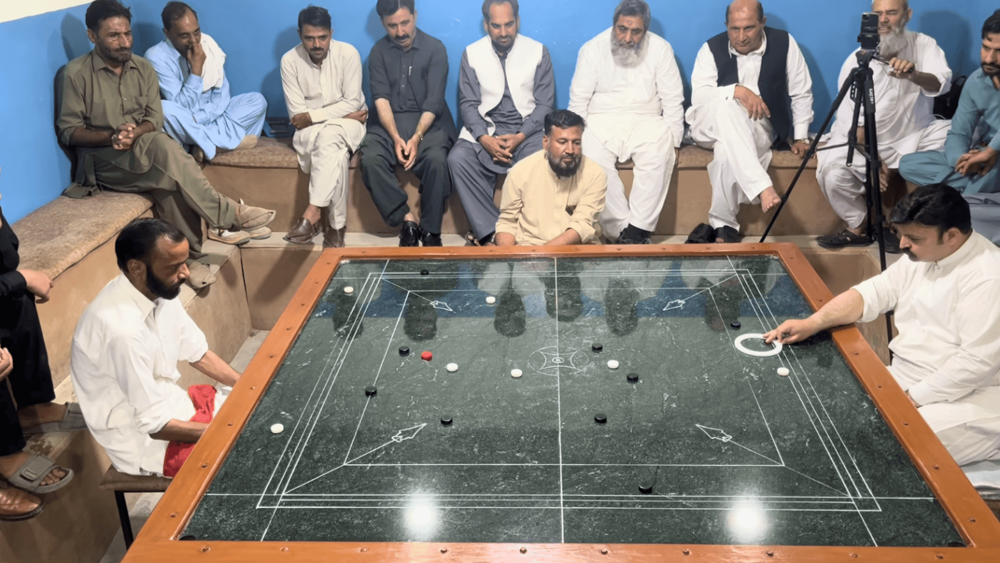
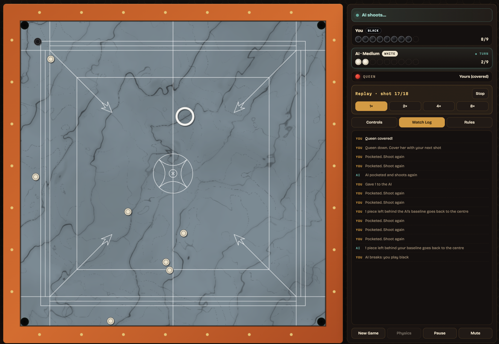

Pakistani Carrom
I recently became interested in a game called carrom. I'd never heard of it until YouTube recommended a video of a carrom match to me, and I was instantly hooked. As I later discovered, the game I was watching was an unusual variant of carrom played primarily in Pakistan.

Carrom originated in India and is traditionally played on a square wooden board measuring about 74 × 74 cm. It’s a “strike and pocket” game, somewhat like billiards, where players take turns trying to sink pieces of their color into the table's pockets. Instead of using a cue, players flick a larger disc called a striker to propel the pieces across the board. Boric acid powder is typically sprinkled on the playing surface to reduce friction and help the pieces slide.
The Pakistani version I was watching is quite different. The board is enormous by comparison, probably around 1.6 × 1.6 meters, and has a highly polished marble playing surface. The pieces are shaped so that very little of their surface touches the board, and the striker is a large, hollow plastic disc. Boric acid powder is used here too, but the combination of the polished marble and the design of the pieces seems to produce remarkably little friction.

I think that’s what captivated me about this version. There’s something very satisfying about the way the striker and pieces move across the marble. They glide effortlessly, like air hockey pucks floating on a cushion of air. There’s a kind of fluidity to the movement that makes the pieces seem almost weightless. Watching a well-aimed shot unfold, with the pieces gliding, colliding, and changing direction so smoothly, is pretty mesmerizing to me.
The player featured in these gifs is Ahsan Shah, the best carrom player that I've seen in these videos.
There is very little information on the internet about this game. There are lots of videos of individual matches, but no explanations of the rules, no details about the equipment, no explanations of how the tournaments work, and very little mention of individual players.
Two youtube channels for Pakistani Carrom:
Master carrom club66
Abbas carrom club333
Carrom Adda: Video Game of Pakistani Carrom
